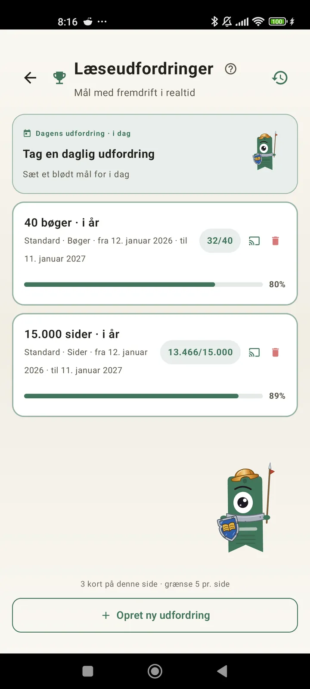

Lær dig selv at kende som læser
Udfordringer, bingoer, widgets og flere funktioner, så du får mest muligt ud af din læsning. Nyt i 3.7: widgets til udfordringer og bingo.

Læseudfordringer
Sæt mål efter sider, striber eller genrer. Op til 15 aktive udfordringer gratis, ubegrænset med Pro. Plus en daglig udfordring, du kan tilpasse, som ikke tæller med i grænsen.

Daglig udfordring
Et nyt mål hver dag. Klar udfordringen inden midnat for at holde din stribe i live.

Læsebingo
To nye bingoer hver måned med temafelter. Fuldfør rækker, kolonner eller hele pladen.

Ugeoverblik
Hver mandag et blik på din uge: læste sider, samlet tid, stribe og hvordan den gik i forhold til ugen før.

Månedsoverblik
Når en måned slutter, opsummerer Lecturameter den: sider, tid, færdige bøger, dit tempo dag for dag og månedens bog.

Bingo-widget Pro
Månedens bingoplade, altid i syne, med de felter du har klaret og de linjer du har lavet.

Bog-widget Gratis
Se den bog, du læser, direkte på startskærmen: omslag, titel, forfatter, sider og fremskridt i procent, altid opdateret. Størrelsen kan ændres, så den passer, hvor du vil.
Helt ærligt, makker, appen føles som terapi. Jeg er gået fra at læse et par sider om dagen til omkring 20 sider om dagen, og det bliver bedreFeedback fra en bruger, sendt på mail

Månedssammenligning Pro
Et hurtigt kig på dine seneste måneder uden at åbne appen. Søjler med hver måneds sider og den aktuelle måned fremhævet, så du med ét blik kan se, om det går bedre eller dårligere end sidste måned.

Udfordrings-widget Pro
Dine aktive udfordringer og deres fremskridt på startskærmen. Vælg, hvilke der skal vises, fra skærmen Udfordringer.